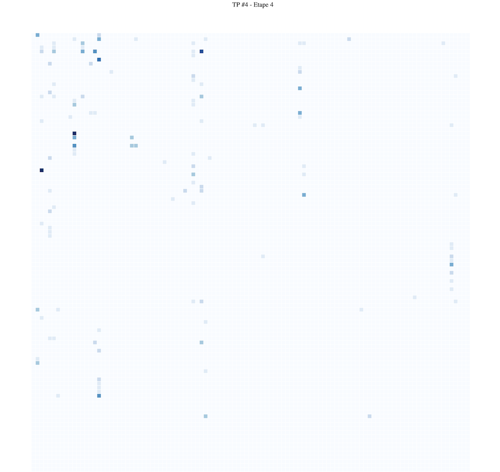

Objectif du TP
Réaliser une matrice d'adjacence, représentant les relations entre les personnages d'une série. À la fin du TP vous devriez obtenir un résultat proche de celui ci-dessous.

1. Créer et positioner votre svg
On commence par définir les dimensions du svg, le créer, et le positionner.
// Definition de la taille du svg
const margin = { top: 0, right: 30, bottom: 20, left: 10 },
width = 960,
height = 960;
// ajout du svg à une 'div id="matrice"' déjà créee dans la page html
var svg = d3
.select("#visu-tp4")
.append("svg")
.attr("width", width)
.attr("height", height)
.append("g")
.attr("transform", "translate(" + margin.left + "," + margin.top + ")");2. Chargement et transformation des données
Les données représentant des réseaux sont typiquement divisées en deux. Un fichier représente les noeuds, un autre les liens entre les noeuds.
Pour ce TP nous allons utiliser les données de relations de personnages de Game of Thrones. En d3 (et dans bien d'autres contextes), on sépare les données en deux parties: d'un côté les noeuds de notre réseau, de l'autre les liens. Ici les deux parties sont dans le même fichier, parfois dans deux différents. Voici un extrait du jeu de données.
{
"nodes": [
{ "character": "Grenn", "id": 0, "influence": 4, "zone": 0 },
{ "character": "Samwell", "id": 1, "influence": 15, "zone": 0 },
{ "character": "Jaime", "id": 2, "influence": 24, "zone": 3 },
{ "character": "Robert", "id": 3, "influence": 18, "zone": 3 },
{ "character": "Tyrion", "id": 4, "influence": 36, "zone": 3 },
{ "character": "Tywin", "id": 5, "influence": 22, "zone": 3 },
{ "character": "Mance", "id": 6, "influence": 12, "zone": 0 },
...
],
"links": [
{ "source": 77, "target": 0, "weight": 5 },
{ "source": 77, "target": 1, "weight": 31 },
{ "source": 100, "target": 2, "weight": 18 },
{ "source": 100, "target": 3, "weight": 6 },
{ "source": 100, "target": 4, "weight": 5 },
{ "source": 100, "target": 5, "weight": 8 },
{ "source": 72, "target": 6, "weight": 5 },
{ "source": 101, "target": 7, "weight": 5 },
{ "source": 65, "target": 8, "weight": 11 },
...
]
}Pour vous faire gagner du temps, voici une fonction qui prend en entrée une liste de noeuds et une liste de liens d'un graphe, et retourne un tableau de valeurs que nous souhaitons afficher correspondant à une matrice (applatie): chaque élément correspond aux propriétés du lien entre deux personnages, le poid du lien, ainsi qu'une position en x et en y qui correspond à la position dans la matrice d'adjacence.
adjancencymatrix = createAdjacencyMatrix(nodes, edges)La matrice qui vous est renvoyée contient 107*107 éléments (107 est le nombre de personnages dans nodes). Voilà à quoi correspont l'objet à l'intérieur d'un élément du tableau, i.e. la description de la relation directionelle entre deux personnages :
{
"id": "10-25",
"x": 10,
"y": 25,
"weight": 46,
"name_s": "Bran",
"name_t": "Jojen",
"zone_s": 2,
"zone_t": 2
}3. Créer un domaine pour notre échelle
Nous allons maintenant créer une échelle pour pouvoir signaler la force du lien entre deux personnages. Comme domaine nous irons entre 0 et le max de influence dans le tableau des noeuds à afficher (nodes ci-dessus). Notre range sera d3.schemeBlues[9] pour commencer (une échelle bleu).
var scale = d3.scaleQuantize()
.domain([0, maxWeigth]) // TODO
.range(d3.schemeBlues[9]); // donné par D34. Afficher une 1e matrice d'adjacence
On va parcourir la liste des liens et pour chacun dessiner un carré (= un rect de height et de width 5 pour commencer. On ajustera ensuite).
La position de ce carré sera déterminée par sa source et son target. Prenez la source en x et la target en y.
La couleur (fill) sera déterminée par la valeur de weight.
matrixViz = svg.selectAll("rect")
.data(adjancencymatrix)
.join("rect")
.attr("width", TODO)
.attr("height", TODO)
.attr("x", function (d) {
TODO
})
.attr("y", function (d) {
TODO
})
.style("stroke", "black")
.style("stroke-width", ".2px")
.style("fill", function (d) {
TODO
})
});Vous devriez avoir un rendu proche de ceci:
5. Axes
On va mainteant ajouter les axes. Pour cela on va créer une échelle particulière : une scaleBand(). Elle va nous aider à faire des calculs de position pour les axes mais aussi pour les "cases".
var positionsPersonnages =
d3.range(graph.nodes.length); // un tableau d'autant d'element que de personnages
// [0, 1, ..., 106]
var echellexy = d3.scaleBand()
.range() // TODO correspond [0, largeur du dessin]
.domain(positionsPersonnages)
.paddingInner(0.1)
.align(0)
.round(true);Dans le code de dessin utilisé à l'étape précédent, à la place de width, height, x et y "codés en dur" vous pouvez maintenant utiliser echellexy(valeur) pour positionner vos rectangle de manière optimale. echellexy.bandwidth() vous donnera la valeur du pas entre deux éléments.
Nous pouvons maintenant dessiner les axes. On va rajouter des groupes (g) au svg de base. Pour l'axe des colonnes on va l'affiche à la verticale puis le tourner de 90 (c'est plus simple de faire ainsi).
var labels = d3.select("svg")
.append("g")
.attr("transform", "translate(60, 60)")
.style("font-size", "8px")
.style("font-family", "sans-serif");
var columns = labels
.append("g")
.selectAll()
.data(graph.nodes)
.join("text")
TODO
.attr("transform", "rotate(-90)"); // on tourne tout l'axe de 90°
var rows = labels
.append("g")
.selectAll()
.data(graph.nodes)
.join("text");
TODOMi-chemin
Arrivé ici vous aurez 1/2
6. Amélioration du rendu
La fonction createAdjacencyMatrix peut en réalité prendre plus d'arguments. En plus de nodes et links, son 4e argument est lié à la symétrie ou non des relations entre les personnages. Appelez createAdjacencyMatrix(nodes, links, undefined, true) le dernier argument à true spécifie que les relations doivent être considérées dans les deux sens.
Effectuez le changement et regardez le résultat.
On va ensuite colorer les cellules non seulement en fonction de la force de la relation mais aussi de la zone ou les personnages se trouvent/rencontrent.
On crée une nouvelle échelle ordinale (catégorielle) pour pouvoir allouer une couleur distincte par zone.
var zoneScale = d3.scaleOrdinal(d3.schemeCategory10);La propriété svg fill du rect, va maintenant correspondre à couleur de la zone si le personnage source d.zone_s et cible d.zone_t sont dans la même zone, et gris sinon "#eee".
Vous pouvez utiliser l'attribut svg opacity du rect pour montrer la force du lien ("0%" si weight est à 0, "100%" si valeur max). Pour améliorer le rendu j'ai renforcé la force des liens en multipliant toutes les valeurs par 10.
Vous devriez avoir un rendu proche de ceci:

7. Ré-ordonnancement et animation
Nous allons ré-ordonner la matrice selon différents critères (déjà calculés pour simplifier):
- "ordre d'apparence des personnages"
appearances(celui par défaut si rien n'est spécifié), - "zones de présence partagées"
zones, - "influence des personnages"
influences.
Si vous passez un de ces tableaux d'ordre comme paramètre de domain() à echellexy alors le calcul des positions sera mis à jour pour vous donner les positions correpondant au nouvel ordre des personnages.
7.1 Ré-ordonnancement - Rajoutez un menu, dans le code html de la page qui permette de choisir entre ces trois options. Voir cet exemple pour rappel de comment capturer un événement JS.
Nous allons créer une fonction update() qui va être chargée de mettre le dessin à jour.
function update (newPositions) {
echellexy.domain(newPositions) // ici on met à jour la fonction de calcul des positions qui nous permettra de repositionner.
rows
.attr("dy", TODO);
columns
.attr("dy", TODO)
matrixViz.selectAll("rect")
.attr("x", TODO)
.attr("y", TODO)
}7.2 Animation - La bascule entre les visulalisations se fait instantanément. On va maintenant utiliser les propriétés d'animation de d3 pour permettre de suivre les changements de position dans la matrice d'adjacence. delay permet de spécifier quand l'animation va démarrer, et duration combien de temps elle dure. Vous êtes libre dans l'animation que vous faites.
function update (newPositions) {
echellexy.domain(newPositions)
rows
.transition()
.delay(TODO)
.duration((TODO)
.attr("dy", TODO);
columns
.transition()
.delay(TODO)
.duration(TODO)
.attr("dy", TODO)
matrixViz.selectAll("rect")
.transition()
.delay(TODO)
.duration(TODO)
.attr("x", TODO)
.attr("y", TODO)
}Rendu
Le rendu final est pour le 19 décembre à 23h59, via Tomuss (rendu TP4). Le TP peut se faire en binôme.